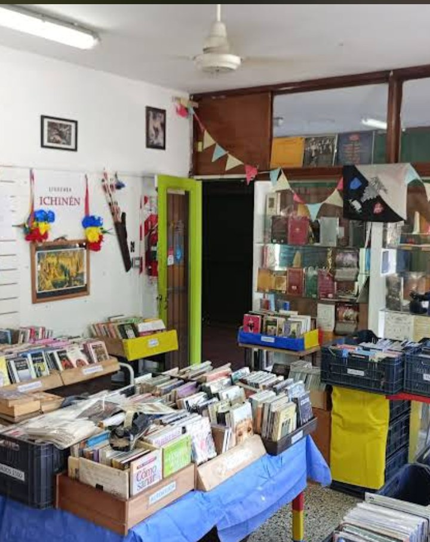

En Ichinén cada libro tiene una historia. Y cada lector, un nuevo viaje por empezar.

Para empezar a buscar
Dónde estamos
Ichinén está sobre Av. Triunvirato 4015, Local 3, en pleno Villa Urquiza, a menos de dos cuadras de la estación Echeverría de la línea B. Si venís de Villa Pueyrredón, Coghlan, Parque Chas o Belgrano, nos tenés a mano.
Somos una librería de usados. Buena parte de lo que ves en las mesas llega de bibliotecas particulares que compramos, así que el stock se mueve todo el tiempo: lo que hoy no está, la semana que viene puede estar, y al revés. Un libro usado se encuentra revolviendo, y esa es la mitad de la gracia.
Para que puedas mirar antes de venir, publicamos el catálogo completo: más de 4.500 títulos ordenados en 17 categorías, con autor, editorial y año. Se puede buscar por título o por autor, o entrar directo por Narrativa, Historieta y cómic, Policial y misterio o Infantil y juvenil.
No vendemos por internet: el catálogo es para orientarte, y la compra es acá, en el local, de lunes a sábado de 10 a 19. Si querés confirmar que un título sigue disponible antes de pegarte el viaje, escribinos por WhatsApp y te avisamos.
Preguntas frecuentes
En Av. Triunvirato 4015, Local 3, barrio de Villa Urquiza, Ciudad Autónoma de Buenos Aires, a menos de dos cuadras de la estación Echeverría de la línea B de subte.
De lunes a sábado, de 10 a 19.
No. El catálogo online es para consultar y orientarse; la compra se hace en el local. Si querés confirmar que un título sigue disponible antes de venir, escribinos por WhatsApp al +54 11 5995-2089.
Sí. Compramos y tasamos libros usados y bibliotecas particulares en la Ciudad de Buenos Aires. Lo más práctico es escribirnos por WhatsApp y contarnos qué tenés.
Más de 4.500 títulos, ordenados en 17 categorías: narrativa, ensayo y no ficción, historieta y cómic, clásicos de la literatura, teatro, historia y política, policial, filosofía, infantil y juvenil, poesía y más.
El catálogo tiene un buscador por título y por autor, y además páginas por categoría y por autor para recorrerlo de a poco.
El espíritu de Ichinén
No somos un algoritmo. Nos gusta conversar sobre libros, recomendar lecturas y que los libros circulen. Y nos encanta cuando alguien encuentra justo el libro que no sabía que estaba buscando.
El catálogo es una ayuda, pero un usado se encuentra revolviendo. Si andás cerca y tenés ganas, date una vuelta por el local. También podés consultarnos por WhatsApp.
Escribinos por WhatsAppVendénos tus libros
¿Tenés libros usados que ya no leés, o te quedó una biblioteca entera que no sabés dónde poner? Compramos y tasamos bibliotecas particulares en toda la Ciudad de Buenos Aires. Escribinos y lo charlamos.
Seguinos en Instagram
Novedades, ofertas y libros que van llegando.
Ver InstagramVisitanos
Dirección
Av. Triunvirato 4015, Local 3
Villa Urquiza, Ciudad Autónoma de Buenos Aires
Teléfono